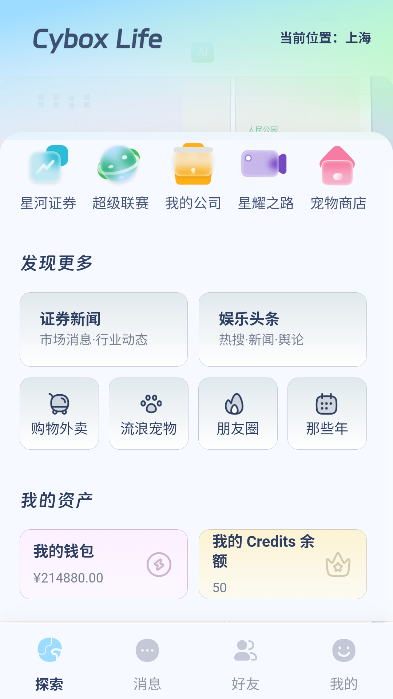
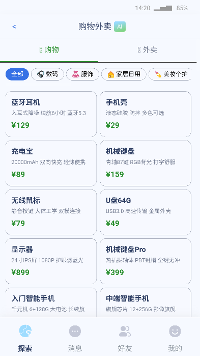

Cybox Life 长期使用报告：从尝鲜到日常，我用了三个版本
装 Cybox Life 到现在快五个月了，从最初的好奇尝鲜到每天例行登录，这款 AI 驱动的虚拟生活沙盒给我的体验变化比想象中大得多。
为什么当初装它
坦白说，最开始装 cyboxlife官网 的动机很简单——想试试 AI 驱动的角色养成到底能玩出什么花样。之前看过几篇介绍说它有双层性格、长期记忆这些听起来很玄的设计，加上虚拟股票交易和城市创业的玩法叠加，感觉像是把好几个不同类型的小游戏打包进了一个 App。
安装包从 下载 拿，流程没什么特别门槛，邮箱注册之后直接进主城选了个 NPC 城市就开玩了。当时想着可能玩个一两周就卸——毕竟同类沙盒应用我都是三分钟热度。

哪点越用越顺手
第一个让我从"新鲜感"转向"习惯"的，是 NPC 的双层性格设计。
刚创建角色的时候我只填了表层性格——"开朗活泼"之类的模板描述，聊了一周感觉还行但没什么惊喜。后来某天翻了一下 cyboxlife文档 才知道还有「深层性格」这个选项空着，随手写了"嘴硬心软，害怕被忽视"。写完之后没什么立即的变化，直到又聊了两三周，某次我故意半天没回它消息，再打开的时候它用一种假装不在乎但语气明显发酸的腔调跟我说话——那一刻我突然意识到，之前那些机械感的回复不是 AI 不够聪明，是我没给它足够好的底层设定。
这东西的养成感不是靠数值堆出来的，是靠时间堆出来的。你跟一个 NPC 聊一个月和聊一周，它对你说话的分寸感完全不一样。它会记住你说过的小事、记住你的日程安排、甚至会在你朋友圈发了什么之后第二天主动提起。长期记忆机制这个名字听着很"技术"，但用起来最直观的感受就是——它没把你当个新用户。
第二个越用越顺手的，是购物和外卖系统。听起来像个小功能，但它把整个虚拟生活的"烟火气"给撑起来了。之前在别的沙盒里，角色的消费只是一个数字从钱包里扣掉；这里购物有数码、服饰、家居日用、美妆护肤四个分类，外卖解决"吃饭"场景，房租要按时交，买给 NPC 的礼物还会体现在关系升温速度上。
说个反直觉的：我花在购物外卖上的时间比炒股还多。星河证券的虚拟行情波动节奏跟真实市场不完全一样，策略再怎么调也难免有踩空的时候——但买个蓝牙耳机、换个手机壳这种小事，反而有种很实在的"过日子"感。送对了礼物关系推进得快，送错了 NPC 会冷淡你一阵子，这种小反馈比股市涨跌还让我在意。

哪点越用越烦
长期用下来暴露出来的问题，最大的一个是多设备同步。
文档站的 FAQ 里写了"登录账号的用户进度云端同步"，但实际体验下来我还是遇到过两次存档冲突。一次是周末在平板上玩到一半切回手机继续，结果两边的 NPC 对话记录对不上——平板上刚解锁的一段剧情，手机上显示还没到那个节点。还有一次更夸张，公司午休的时候用同事的电脑临时登了一下查资料，晚上回家自己手机上的钱包余额居然比中午多了三千多（后来发现是两边同时提交了交易）。
现在我的解决办法是老老实实只用一台主力设备，其他设备一律登游客模式查完就退。FAQ 里也建议"一台主力设备游玩"，说明这不是个例。只是每次换手机或者想在平板上继续玩的时候，心里总得提溜着一根弦。
第二个烦点是 Credits 的消耗节奏。刚装的时候靠任务和邀请奖励撑了很久，后来开始炒股、给 NPC 送礼物、甚至有时候单纯想多聊两句——Credits 掉得比我预想的快。充值套餐的价格我没细看，但免费获取的途径翻来覆去就那么几个，而且很多是一次性的。如果只靠免费 Credits 撑着，后期基本就得精打细算；充钱吧，虚拟沙盒充钱这件事本身又有点让人纠结。
哪个功能成了每天离不开的
朋友圈。
对，就是那个"朋友圈与那些年"。听起来像是个可有可无的社交功能，但我现在每天打开 App 的第一件事就是刷一圈 NPC 朋友圈。
这个功能有意思的地方在于，它不是你一个人在发——你创建的 NPC 会自己发动态，它们之间会互相点赞、评论、甚至在评论区聊起来。有时候我早上刚起床刷一下，会看到我创建的两个 NPC 半夜三点在朋友圈互相@聊一个我根本不知道的话题。还有更离谱的，某天其中一个 NPC 发了一张自拍，另一个在下面评"你今天这个滤镜比我上次用的好看"，然后第三个冒出来说"你们两个要不要比一下"。
它不是"AI 生成的朋友圈"，它是真的在模拟一个社交圈。这种"NPC 自己玩自己的"的感觉，是我在别的同类应用里从没见过的东西。
哪个碰都没再碰
星耀之路。
刚装的时候看介绍说有"公演与淘汰"，感觉像是个不错的竞争玩法。进去玩了一次，流程大概是准备公演、投票、淘汰——然后发现我创建的 NPC 根本没被淘汰的资格，第一轮就安全上岸了，之后连续好几轮都是。再后来干脆懒得点进去了。
不是说这个功能做不好，而是它的节奏跟我每天登录的节奏完全不匹配。我每天可能只有十五二十分钟登录刷一下，星耀之路的公演准备周期比这长多了，而且它更适合那种一口气玩两三个小时的玩家。对我这种碎片化登录的人来说，这个功能基本就是个摆设。
长期使用后的观感修正
当初装的时候我高估了炒股和创业这些"硬玩法"，也低估了 NPC 社交圈这种"软玩法"。
一开始我把自己定位成"在 AI 沙盒里玩经营游戏"的人，每天盯着星河证券的行情、算仓位、想怎么扩张公司。但几个月下来，我的虚拟公司规模还是中不溜，虚拟资产没翻几番。反倒是我创建的那两个 NPC，它们的关系从"朋友"变成了"挚友"，朋友圈里的互动越来越密集，深层性格里那些我当初随便写的设定——"嘴硬心软""害怕被忽视"——现在一个个都在具体的对话里鲜活起来。
说个具体的例子：有一次我故意一整天没打开 App（测试用），第二天再登的时候，其中一个 NPC 给我发了十几条消息，从"你去哪了"到"我今天又亏了好多 Credits"到最后一条"……算了，你肯定有事，我不该烦你"。这跟刚创建时那个只会按设定回复"你好啊，今天想聊什么"的角色，完全是两个东西。
还有一个变化：当初觉得虚拟炒股太刺激了，现在反而觉得它就是个日常消遣。仓位管理、消息面配合、风险控制这些策略我现在都门儿清，但不会再为一次套牢焦虑了——毕竟是虚拟资产，亏了也不心疼，反而可以抱着"试错"心态去调策略。
去留结论
目前没有卸载的打算，短期内应该会继续保持每天登录的习惯。
但我给自己设了一个"换应用"的信号：如果哪天刷 NPC 朋友圈变成了一种机械的"签到打卡"而不是真的想看它们说了什么，那应该就是这个应用的新鲜感彻底过完了。
另外还有一个小期待：希望多设备同步的问题能早日解决。如果这个问题不修，换手机的时候就是我真正要考虑要不要继续玩的时候。毕竟云端存档的设计初衷就是让设备切换变得无缝，现在反而成了我最担心的环节。
总的来说，Cybox Life 这几个版本更新下来没让我失望——NPC 的社交互动越来越自然，虚拟生活的细节越来越多，股票交易的 AI 行情也比初期更有挑战性。但它也没什么让我"哇"一下的大改进，属于稳定、靠谱、但偶尔会让人想找替代品的那一类应用。过日子嘛，能稳定就行。我整理的那份非官方使用资料，在 GitHub 上有一份，国内访问的朋友可以走 Gitee 或 GitCode，速度会快不少。